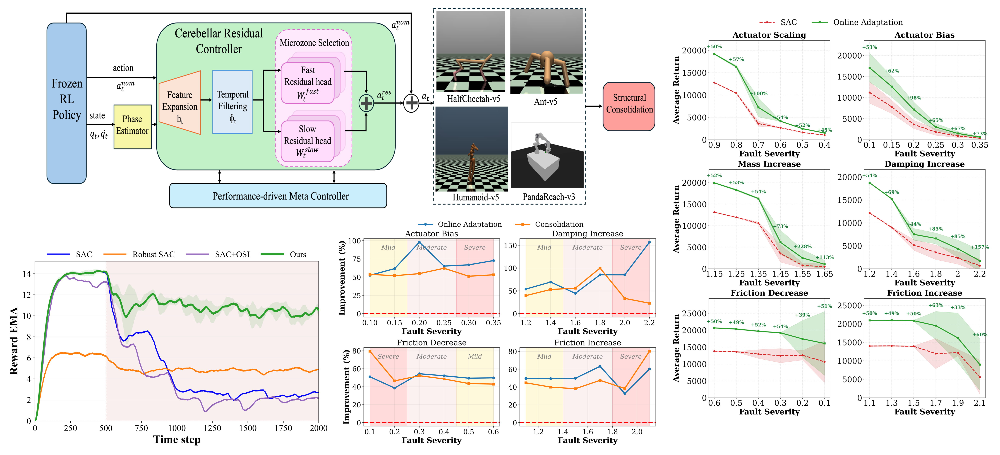

1University of Illinois Chicago · 2Northwestern University (Neurobiology) · 3Northwestern University
A frozen RL policy gets a lightweight, cerebellum-inspired residual controller that corrects faults online, at inference time - no retraining, no gradient updates to the base policy - recovering up to +66% performance under post-training disturbances.
Robotic policies deployed in real-world environments often encounter post-training faults, where retraining, exploration, or system identification are impractical. We introduce an inference-time, cerebellar-inspired residual control framework that augments a frozen reinforcement learning policy with online corrective actions, enabling fault recovery without modifying base policy parameters.
The framework instantiates core cerebellar principles, including high-dimensional pattern separation via fixed feature expansion, parallel microzone-style residual pathways, and local error-driven plasticity with excitatory and inhibitory eligibility traces operating at distinct time scales. These mechanisms enable fast, localized correction under post-training disturbances while avoiding destabilizing global policy updates. A conservative, performance-driven meta-adaptation regulates residual gain and plasticity, preserving nominal behavior and suppressing unnecessary intervention when behavior remains nominal.
Experiments on MuJoCo benchmarks under actuator, dynamic, and environmental perturbations show improvements of up to +66% on HalfCheetah-v5 and +53% on Humanoid-v5 under moderate faults, with graceful degradation under severe shifts and complementary robustness from consolidating persistent residual corrections into policy parameters.

Mean ± std episodic return over 30 runs, one representative moderate severity per fault family. Robust SAC, OSI, and Offline Res. use training-time fault exposure; CMAC, LMS, and Ours adapt online at inference time. Bold = best, underlined = second-best.
| Method | HalfCheetah-v5 | Ant-v5 | ||||
|---|---|---|---|---|---|---|
| Actuator | Dynamic | Environment | Actuator | Dynamic | Environment | |
| SAC | 3612 ± 594 | 5093 ± 1165 | 11958 ± 4085 | 4542 ± 907 | 3816 ± 1909 | 3796 ± 1397 |
| Robust SAC | 3093 ± 626 | 3491 ± 541 | 12315 ± 410 | 5278 ± 180 | 4001 ± 1203 | 3528 ± 1594 |
| SAC + OSI | 7548 ± 250 | 8810 ± 251 | 11738 ± 2350 | 3128 ± 711 | 3376 ± 1223 | 2207 ± 806 |
| SAC + Offline Res. | 3898 ± 200 | 5441 ± 824 | 12977 ± 1573 | 5220 ± 1300 | 4918 ± 1734 | 3323 ± 1840 |
| SAC + CMAC | 3855 ± 774 | 6052 ± 949 | 11011 ± 4821 | 5324 ± 2403 | 4556 ± 1265 | 4985 ± 2019 |
| SAC + Online LMS | 4000 ± 782 | 5517 ± 1140 | 11672 ± 4184 | 4273 ± 1138 | 4712 ± 2176 | 2984 ± 499 |
| SAC + Ours | 7239 ± 2159 | 7502 ± 1281 | 19517 ± 3834 | 5622 ± 1137 | 4728 ± 1447 | 4551 ± 2132 |
| Method | Humanoid-v5 | ||
|---|---|---|---|
| Actuator | Dynamic | Environment | |
| SAC | 8168 ± 4702 | 10108 ± 5556 | 11099 ± 4909 |
| Robust SAC | 11620 ± 6410 | 12597 ± 5633 | 14694 ± 2728 |
| SAC + OSI | 5754 ± 1771 | 7790 ± 1112 | 9265 ± 1064 |
| SAC + Online LMS | 8703 ± 5832 | 9687 ± 5554 | 12839 ± 3369 |
| SAC + Ours | 13981 ± 5624 | 15282 ± 5979 | 19825 ± 7932 |
@inproceedings{jayasinghe2026cerebellar,
title = {Cerebellar-Inspired Residual Control for Fault Recovery:
From Inference-Time Adaptation to Structural Consolidation},
author = {Jayasinghe, Nethmi and Gontero, Diana and Brown, Spencer T.
and Sangwan, Vinod K. and Hersam, Mark C. and Trivedi, Amit Ranjan},
booktitle = {Proceedings of the 43rd International Conference on Machine Learning (ICML)},
series = {PMLR},
volume = {306},
year = {2026},
eprint = {2602.07227},
archivePrefix = {arXiv},
primaryClass = {cs.LG}
}